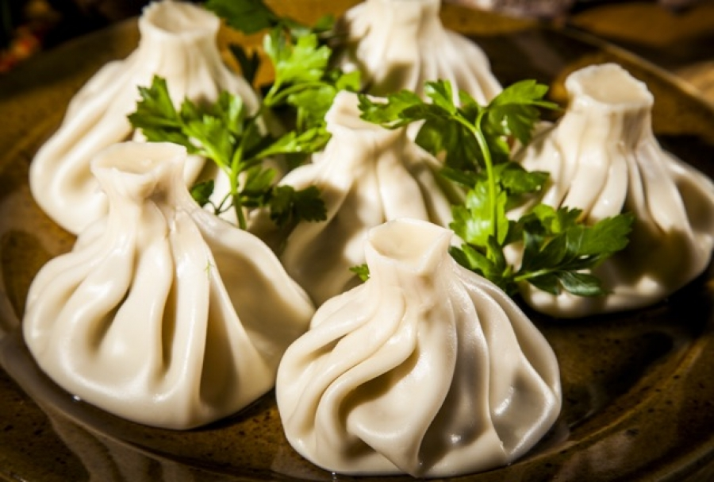

Khinkali

Traditional Georgian Recipe
Khinkali (Georgian: ხინკალი) is a very popular Georgian dumpling
made of twisted knobs of dough, stuffed with meat and spices.
It is considered to be one of the national dishes of Georgia.
Ingredients
- Dough
- Mix of ground beef and pork
- Salt and red pepper
- Caraway seeds
- Water and salt for the cooking pot
Steps for cooking
- Add 450 ml of warm water.
- Mix the ingredients from the middle of the bowl
until all of the flour is mixed.
- The dough should be formed into a ball.
- Divide the dough into two pieces.